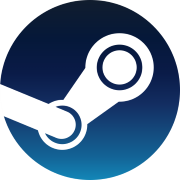

THE GAME UNIVERSE
DOTA 2
Valorant is a free-to-play multiplayer tactical first-person shooter developed and published by Riot Games,
for Microsoft Windows. First teased under the codename Project A in October 2019, the game began a closed
beta period with limited access on April 7, 2020 followed by official release on June 2, 2020.

Valorant is a team-based tactical shooter and first-person shooter set in the
near-future. Players play as one of a set of agents, characters designed based on several
countries and cultures around the world.In the main game mode, players are assigned to either the
attacking or defending team with each team having five players on it. Agents have unique abilities each
requiring charges, as well as a unique ultimate ability which requires charging through kills, deaths, or
spike actions. Each player starts each round with a "classic" pistol and with one or more "signature
ability" charge. Other weapons and ability charges can be purchased using an in game economic system which
awards money based on the outcome of the previous round, any kills the player is responsible for, and any
actions taken with the spike. The game has an assortment of weapons including sidearms, submachine guns,
shotguns, machine guns, assault rifles and sniper rifles. Automatic and semi-automatic weapons such as
the "Spectre," "Odin," and "Vandal" have recoil patterns which have to be controlled by the player in order
to be able to shoot accurately.
 GLHF
GLHF